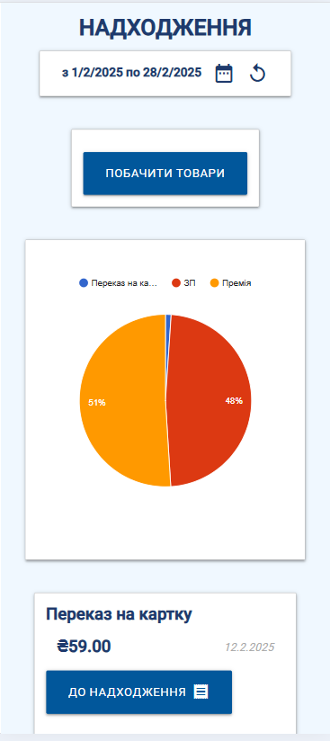

Додаток MoneyBeat — це веб додаток який дозволятиме робити аналіз витрат користовача, наглядно показувати його витрати у графіках та діаграмах, дозволить аналізувати всі покупки, по товарах та категоріях, у вибрані періоди часу. Також буде можливість робити щотижневі чи щомісячні звіти.
Сторінка Фінанси необхідна для моніторигну ваших фінансів, як для витрати так і для надходжень.
1. Вибір дати, при натисканні на календар Вас перекидує на мадальне вікно де у зручному календарі Ви
вибираєте діапазон дат для відображення операції.
2. Орієнтовані кошти на вашому рахунку - це приблизна сума яка обчислюється завдяки вашим витратам
та надходженням.
3. Витрати та Надходження - два поля які відображають ваші витрати, та надходження. Якщо нажати на
Надходження то перейдете до наступної сторінки.
4. Діаграма витрат - Це діаграма в якій показано ваші витрати по категоріях.
5. Список категорій - це список категорій по витратах та сума витрачена на них
6. Список чеків - Список останніх чеків записаних в додатку. Якщо нажати на один з чеків перейдемо
на сторінку ДЕТАЛІ ПРО ПОКУПКУ
 Сторінка Надходження показує всі надходження записані в додатку. Функціонал як і у Фінансах.
Єдиний спосіб попасти на цю сторінку це через «Фінанси», можливо добавлю через головне меню, але це
при умові практичного користування додатка, в реальних умовах, якщо ця сторінка буде часто
використована. Можливо вхід у неї буде можливий через «Головну сторінку»
Нас зустрічатиме Надпис «Витрати по Категоріях»
Нижче аналогічний календар як у сторінці «Фінанси», з вибором періоду. Також буде знаходитися
дропменю з назвами категорій. Саме дропменю матиме можливість швидкого пошуку, якщо почати писати
назву категорії вона появиться у селекторі. Коли ми вибрали період, та категорію ми нажимаємо кнопку
«Побачити товари по вибраній категорії».
Про категорії. Всі категорії є динамічні і тісо пов’язані з товарами які були куплені по тих чи
інших категоріях. Якщо користовач тільки почав користуватися додатком то у нього вже будуть створені
перші категорії.
Нижче буде представлено список товарів по вибраній категоріх. Так само як на сторінці «Фінанси» буде
представлено фіксована кількість товарів, наприклад 10.
Список товарів буде представлено у вигляді плиток(карток). Кожна з них буде клікабільна.
Кожна плитка буде братися з окремого чеку і буде мати пряме посилання на цей самий чек
Картки товарів будуть мати вигляд:
З ліва великими синіми буквами написано назву товару, під нею малими сірими назву магазину, трішки
праворуч в душках кількість по центрі великими ціна. Після дві кнопки, перша «Перейти на чек
покупки»(Розділ 4), друга «Перейти до статистики товару»(Розділ 5) (можливо скорочено), з права
малими сірими літерами дата.
Після чого буде інформація:
Назва магазину.
Адреса:
Дата покупки.
Список товарів представлений так:
Назва синім колором великим буквами товару, в дужках кількість з права ціна загальна за всі одиниці,
в дужках за одну одиницю (загальна ціна / кількість).
Тотальна сума чеку.
Назва магазину буде клікабільна і буде переводити на сторінку «Покупки в магазині»(Розділ 6.)
Товар буде клікабільний і буде переводити на сторінку Статистика по товару (Розділ 5)
Нижче буде кнопка «Показати графік чеку». При нажиманні її буде показано в модульному вікні круглу
діаграму з всіма витратами в чеку
Дуже подібне до Деталі по Категоріях. Такий самий селектор дати і календаря. По дефолту з 1 числа
місяця. Такий самий дробменю вибору товару. По дефолту присвоєно товар на який нажав.
Відмінність це графік. Саме графік. А не діаграма. По рядках дні визначеного періода, по дефолту
місяць. По стовпчиках, ціна. Кожна покупка являє собою точку. Якщо нажати на неї появиться підказка
темного кольору, можливо напів прозорого. Ціна за покупку і в душках кількість.
Таким чином наглядно можна побачити скільки купляється і в які дні.
Все майже те саме що і у інших сторінках, той самий календар.
Дробменю з магазинами. Діаграма, скільки покупок було здійснено саме у цьому магазині. Один
колір показано відсоткове співвідношення покупок в цьому магазині, сірий колір вся інша зона. Для
того щоб не засирати інтерфейс.
Знизу чеки зроблені в тому магазині. Спочатку 5 чеків, і кнопка «Показати всі» показує всі з цього
періода
Зайти на сторінку можна з головного меню, також нажавши велику круглу кнопку плюс, на «Головній
сторінці» (Розділ 10).
Сторінка «Добавити витрати» зустріне клієнта відповідним заголовком.
Нижче будуть представлені два горизонтальні розділи які можна буде переключати: “Добавити чек
вручну” та «Відсканувати чек(бета)».
Добавити чек вручну складатиметься з трьох блоків, які матимуть світло сірий фон.
Перший блок відповідатиме за загальні відомості чеку та магазину де була здійснена покупка. Всі поля
будуть дробменю з можливість пошуку. Пояснюється це тим що здебільшого всі витрати робляться у тих
самих магазинах(не рахуючи людей які часто подорожують). Це дозволить значно зекономити час
заповнення чеку. Дані про магазин та відповідно його адрусу братимуться з localStorege або фільтром
усіх чеків і парсером відповідних полів об’єкта, або окремим збереженим полем в локалі. Надаю
перевагу першому щоб менше засирати сторедж.
Дата являтиметься кнопка при натисканні якої відкриватиметься модальне вікно з заголовком «Виберіть
дату покупки» календарем з вибором одної дати та кнопкою «Зберегти» або «Вибрати».
Наступний блок буде заповнення товарів.
На початку буде одна картка і нижче кругла кнопка «+».
Товари являтимуть собою окремі картки(плити) сірого кольору з такими полями. Пояснення окремого поля
являтиме собою плайсхолдер який при нажиманні на поле переїжджає у верх. Функціонал береться з
бібліотеки “Materialize”.
При вводі назви товару, і якщо товар вже купляли раніше то в селекторі має він відобразитися. А
після в колонці категорія має добавитися флажок категорії.
Також матиме кнопки «Обнулити» являтиметься іконкою та оновляє поля картки товару, якщо раптом
користовач допустив помилку. Наступна кнопка буде «Х» видалити товар зі списка.
Нижче в окремому полі теж сірого кольору буде невеликий блок «Загальна СУМА» і збоку число
підрахування загальної суми товарів .
Сторінка зустрічає заголовком. Та буде доступна з меню. Складатиметься з блоку(плитки, картки) де будуть поля «Назва надходження» та «Сума» та «дата» . Нижче кнопка «Добавити надходження» При натисканні на яку появлятиметься конфірм з питанням «Точно бажаєте підтвердити надходження» Зробити перевірку на записах щоб поля не були пусті інакше вивести помилку і поле підкреслити червоним. Вибір дати буде здійснено як і у всьому проекті завдяки модальному вікні з календарем і одинарним вибором.
Кнопка дата. У модельному вікні вибираєш період з по яку дату робити зввіт. Натискаєш згенерувати. І
в полі результат отримуємо такого формату:
Витрати 16-25 Листопада (10 днів)
Їжа - 1895.05 грн.
Вилазки - 759 грн.
Сигарети - 1780 грн.
Палата - 750
Здоров'я - 281
Краса - 1400
Дім - 1800 грн.
Подарунки - 1550 грн.
Кредит - 1281
Донат - 200 грн.
Комунальні - 1012 грн.
Оренда - 13'000 грн.
#сумарнолистопад 25'708.5 грн.